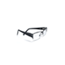
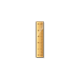

If you wear spectacles, take the test wearing them.

Maintain a distance of 3 feet from the screen, at all times. If this distance is not maintained, we cannot derive the correct result!
The screen should be parallel to your face
Maintain eye level at the same height as the screen so that the letters are clearly visible
This test is best viewed on Screen Resolution of (TO BE CALCULATED)